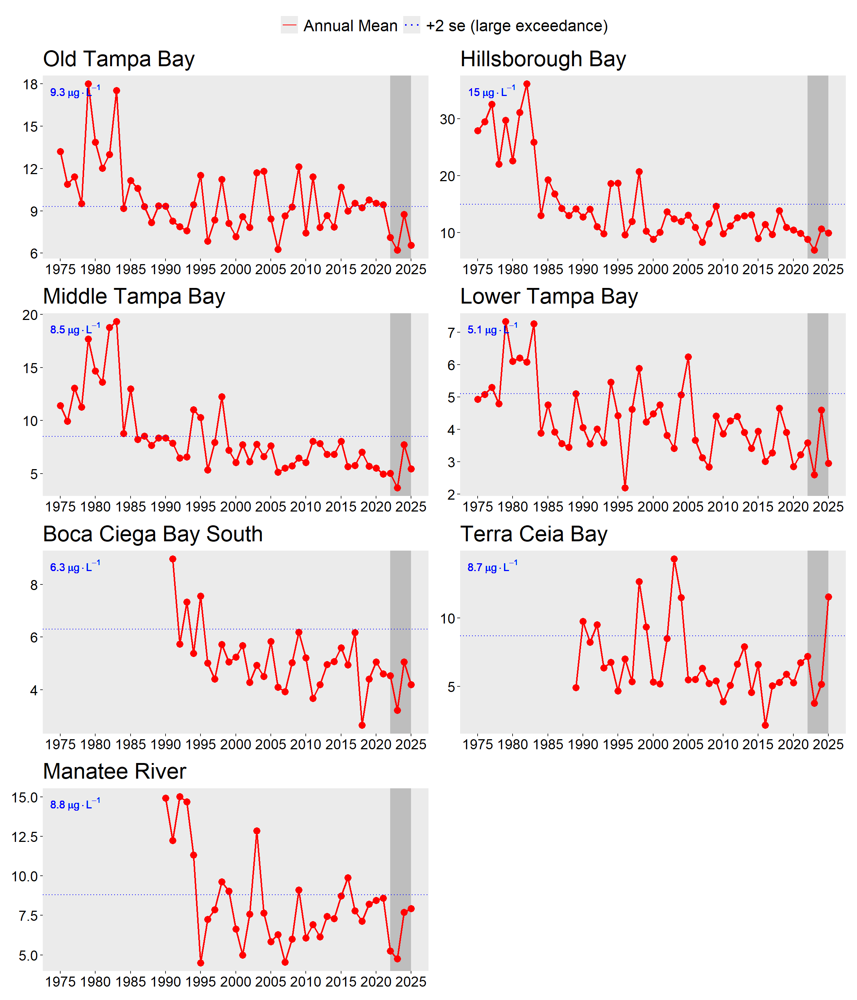
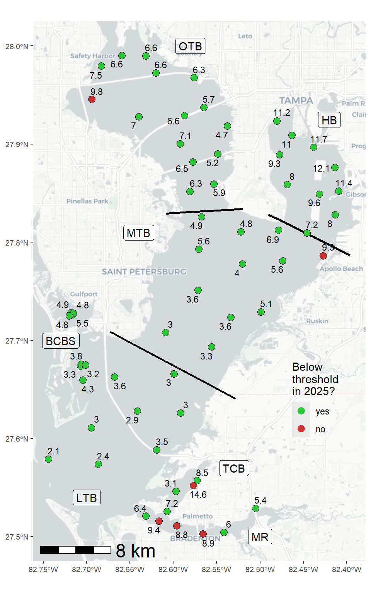
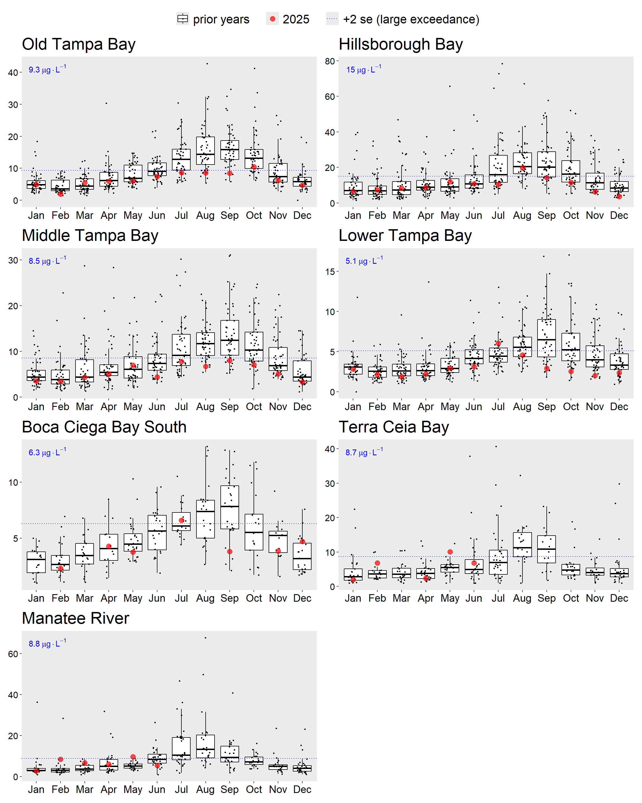
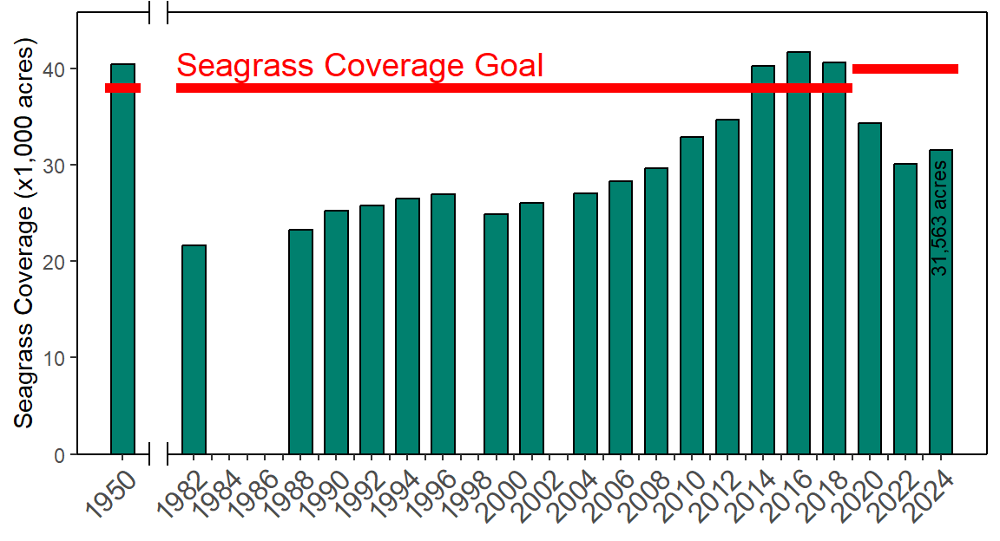
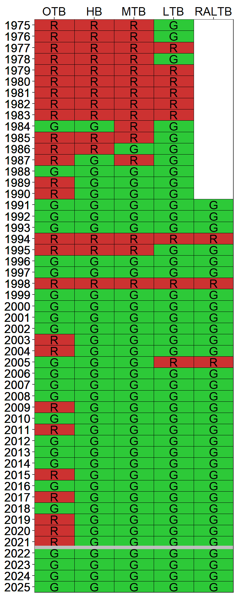

Bay Segment | 1992 - 1994 Hydrology (95% Prediction Interval, million m3) | Hydrology Estimate (million m3) | Compliance Load Adjustment Factor |
|---|---|---|---|
Old Tampa Bay | 383 - 548 | 471.14 | |
Hillsborough Bay | 753-1110 | 682.75 | 0.75 |
Middle Tampa Bay | 524-756 | 488.38 | 0.76 |
Lower Tampa Bay | 312-402 | 296.93 | 0.82 |
3 2025 Results Summary
Results from 2025 indicate that all RA bay segments met chlorophyll-a thresholds accepted by the FDEP to maintain FDEP Reasonable Assurance for Tampa Bay and to comply with the EPA TMDL (Figure 3.1) and estuarine numeric nutrient criteria for Tampa Bay (EPA Amended Approval Letter Jun. 28, 2013). A water quality dashboard (https://shiny.tbep.org/wq-dash) is available to further synthesize available data, assess additional water quality metrics (phytoplankton counts), and inform Consortium participants and other resource managers on the status of water quality in Tampa Bay. Chlorophyll-a concentrations were notably lower than the previous year for many bay segments likely because of below average rainfall in 2025 (Figure 3.3). Blooms of harmful algal species (e.g., Karenia brevis, Pyrodinium bahamense) were not observed in any of the bay segments. Although understanding and mitigating blooms of Pyrodinium bahamense in OTB continues to be a focus of research efforts, summer concentrations in Old Tampa Bay were lower compared to prior years and the chlorophyll-a criteria was met for the fourth consecutive year of the RA period. Recommendations from the assimilative capacity assessment for Old Tampa Bay to address recurring water quality issues in that bay segment were presented to the Tampa Bay Nitrogen Management Consortium (TBNMC) and Old Tampa Bay working group (OTBWG) in 2025 (Stantec Consulting Services, Inc. 2024, 2025a, 2025b).
Key findings from the Old Tampa Bay Assimilative Capacity Assessment project include: 1) Relationships among nitrogen, chlorophyll, water clarity, and seagrass within OTB vary over time and space within OTB sub-segments, and now differ from the broader-scale relationships documented in Tampa Bay as a whole; 2) Although linear pathways between nitrogen, chlorophyll, light attenuation, and seagrass remain valid within OTB, the existing paradigm is likely too simplistic to account for potentially synergistic or compounding stressors now being observed in the bay segment; 3) While varying hydrologic inputs and resulting residence times still appear influential to chlorophyll-a NNC attainment, the nitrogen delivery ratios for Old Tampa Bay are consistently discordant with chlorophyll-a NNC attainment; 4) Absolute TN loading assessments were more robustly linked to annual chlorophyll-a NNC attainment compared to normalized loads and alternative hydrologic normalization processes did not produce more robust links to chlorophyll-a attainment; 5) Assessing attainment of seasonal chlorophyll-a management targets for the NW and CW sub-segments of OTB may provide resource managers an earlier warning sign and more proactive opportunity to adaptively manage any subsequent chlorophyll-a NNC exceedance at the annual time-scale; 6) In addition to permitted load allocations, alternative management interventions such as oyster reef restoration or reductions in managed freshwater releases from Lake Tarpon may support better attainment of water quality standards in OTB; and 7) CASM-OTB model results corroborated empirical analyses from Task 2 and other mechanistic modeling efforts (i.e., Integrated Ecosystem Model, WASP) that suggested more consistent attainment of the chlorophyll-a NNC relative to an absolute TN loading threshold of 486 tons/yr. These findings and continued reporting on completed, ongoing, and planned nitrogen load reduction projects will be incorporated into the next RA update.
Baywide coverage of seagrass is estimated to be 31,563 acres. The next SWFWMD seagrass coverage estimate will be developed from aerial photographs acquired over the winter 2025-2026 period. Between 2022 and 2024, gains were observed in all bay segments, excluding Old Tampa Bay. Annual transect surveys conducted by TBEP and its partners (shown in the seagrass transect dashboard) are used to corroborate areal trends. In 2025, slight gains in frequency occurrence in Old Tampa Bay suggest seagrasses may have increased in the last year. Additional research is being pursued by the Southwest Florida Seagrass Working Group to better understand the potential influence of long-term temperature increases and salinity reductions on seagrass declines (Beck et al. 2024).
Detailed results for the 2022-2026 RA implementation period are provided in Tables 3.2, 3.3, 3.4, 3.5, and 3.6 for each bay segment. Results for the Remainder Lower Tampa Bay segment (Boca Ciega Bay South, Terra Ceia Bay, Manatee River) are also included in this annual assessment (reporting began with the 2023 annual assessment). As of the 2025 reporting period, NMC Actions 2-5 are not necessary based upon observed water quality conditions within Tampa Bay, though work is being continued by the TBEP and TBNMC to further understand drivers of seagrass change and Old Tampa Bay’s current assimilative capacity. Individual annual reports of the bay’s conditions from 2025 can be found on the TBEP website, as specified in the following link (Beck, Burke, and Sherwood 2025) and the water quality dashboard. A summary of historic attainment of the regulatory chlorophyll-a thresholds for each of the bay segments is depicted in Figure 3.5.
Lastly, annual hydrologic conditions among all the major bay segments in 2025 were below 1992-1994 levels for all segments except Old Tampa Bay (Table 3.1). Therefore, hydrologic adjustments for evaluating compliance with individual entity load allocations/permitting targets should be applied for each major segment except Old Tampa Bay (Janicki Environmental, Inc. 2012, 2016). The estimated hydrologic loads for each bay segment relative to observed 1992-1994 levels are indicated in the table below. The estimated compliance load adjustment factors (if applicable) are also specified. A tool to calculate the hydrologic estimates and adjustment factors by bay segment is available online through an interactive dashboard and automatically updated as provisional hydrologic estimates are approved by monitoring agencies (https://shiny.tbep.org/tbnmc_hydrologic_estimates/).





Bay Segment Reasonable Assurance Assessment Steps | DATA USED TO ASSESS ANNUAL REASONABLE ASSURANCE | OUTCOME | ||||
Year 1 (2022) | Year 2 (2023) | Year 3 (2024) | Year 4 (2025) | Year 5 (2026) | ||
NMC Action 1: Determine if observed chlorophyll-a exceeds FDEP threshold of 9.3 ug/L | No (7.1) | No (6.2) | No (8.8) | No (6.6) | All years below threshold so far, not necessary for NMC Actions 2-5 | |
NMC Action 2: Determine if any observed chlorophyll-a exceedences occurred for 2 consecutive years | No | No | No | No | All years met threshold, not necessary for NMC Actions 3-5 | |
NMC Action 3: Determine if observed hydrologically-normalized total load exceeds federally-recognized TMDL of 486 tons/year | N/A | N/A | N/A | N/A | Not necessary due to observed water quality and seagrass conditions in the bay segment | |
NMC Actions 4-5: Determine if any entity/source/facility specific exceedences of 5-yr average allocation occurred during implementation period | Not necessary when chlorophyll-a threshold met | |||||
Bay Segment Reasonable Assurance Assessment Steps | DATA USED TO ASSESS ANNUAL REASONABLE ASSURANCE | OUTCOME | ||||
Year 1 (2022) | Year 2 (2023) | Year 3 (2024) | Year 4 (2025) | Year 5 (2026) | ||
NMC Action 1: Determine if observed chlorophyll-a exceeds FDEP threshold of 15 ug/L | No (8.9) | No (6.9) | No (10.7) | No (10) | All years below threshold so far, not necessary for NMC Actions 2-5 | |
NMC Action 2: Determine if any observed chlorophyll-a exceedences occurred for 2 consecutive years | No | No | No | No | All years met threshold, not necessary for NMC Actions 3-5 | |
NMC Action 3: Determine if observed hydrologically-normalized total load exceeds federally-recognized TMDL of 1451 tons/year | N/A | N/A | N/A | N/A | Not necessary due to observed water quality and seagrass conditions in the bay segment | |
NMC Actions 4-5: Determine if any entity/source/facility specific exceedences of 5-yr average allocation occurred during implementation period | Not necessary when chlorophyll-a threshold met | |||||
Bay Segment Reasonable Assurance Assessment Steps | DATA USED TO ASSESS ANNUAL REASONABLE ASSURANCE | OUTCOME | ||||
Year 1 (2022) | Year 2 (2023) | Year 3 (2024) | Year 4 (2025) | Year 5 (2026) | ||
NMC Action 1: Determine if observed chlorophyll-a exceeds FDEP threshold of 8.5 ug/L | No (5) | No (3.7) | No (7.8) | No (5.5) | All years below threshold so far, not necessary for NMC Actions 2-5 | |
NMC Action 2: Determine if any observed chlorophyll-a exceedences occurred for 2 consecutive years | No | No | No | No | All years met threshold, not necessary for NMC Actions 3-5 | |
NMC Action 3: Determine if observed hydrologically-normalized total load exceeds federally-recognized TMDL of 799 tons/year | N/A | N/A | N/A | N/A | Not necessary due to observed water quality and seagrass conditions in the bay segment | |
NMC Actions 4-5: Determine if any entity/source/facility specific exceedences of 5-yr average allocation occurred during implementation period | Not necessary when chlorophyll-a threshold met | |||||
Bay Segment Reasonable Assurance Assessment Steps | DATA USED TO ASSESS ANNUAL REASONABLE ASSURANCE | OUTCOME | ||||
Year 1 (2022) | Year 2 (2023) | Year 3 (2024) | Year 4 (2025) | Year 5 (2026) | ||
NMC Action 1: Determine if observed chlorophyll-a exceeds FDEP threshold of 5.1 ug/L | No (3.6) | No (2.6) | No (4.6) | No (3) | All years below threshold so far, not necessary for NMC Actions 2-5 | |
NMC Action 2: Determine if any observed chlorophyll-a exceedences occurred for 2 consecutive years | No | No | No | No | All years met threshold, not necessary for NMC Actions 3-5 | |
NMC Action 3: Determine if observed hydrologically-normalized total load exceeds federally-recognized TMDL of 349 tons/year | N/A | N/A | N/A | N/A | Not necessary due to observed water quality and seagrass conditions in the bay segment | |
NMC Actions 4-5: Determine if any entity/source/facility specific exceedences of 5-yr average allocation occurred during implementation period | Not necessary when chlorophyll-a threshold met | |||||
Bay Segment Reasonable Assurance Assessment Steps | DATA USED TO ASSESS ANNUAL REASONABLE ASSURANCE | OUTCOME | ||||
Year 1 (2022) | Year 2 (2023) | Year 3 (2024) | Year 4 (2025) | Year 5 (2026) | ||
NMC Action 1: Determine if observed chlorophyll-a exceeds FDEP threshold of 5.1 ug/L | No (3.6) | No (2.6) | No (4.6) | No (3) | All years below threshold so far, not necessary for NMC Actions 2-5 | |
NMC Action 2: Determine if any observed chlorophyll-a exceedences occurred for 2 consecutive years | No | No | No | No | All years met threshold, not necessary for NMC Actions 3-5 | |
NMC Action 3: Determine if observed hydrologically-normalized total load exceeds federally-recognized TMDL of 349 tons/year | N/A | N/A | N/A | N/A | Not necessary due to observed water quality and seagrass conditions in the bay segment | |
NMC Actions 4-5: Determine if any entity/source/facility specific exceedences of 5-yr average allocation occurred during implementation period | Not necessary when chlorophyll-a threshold met | |||||